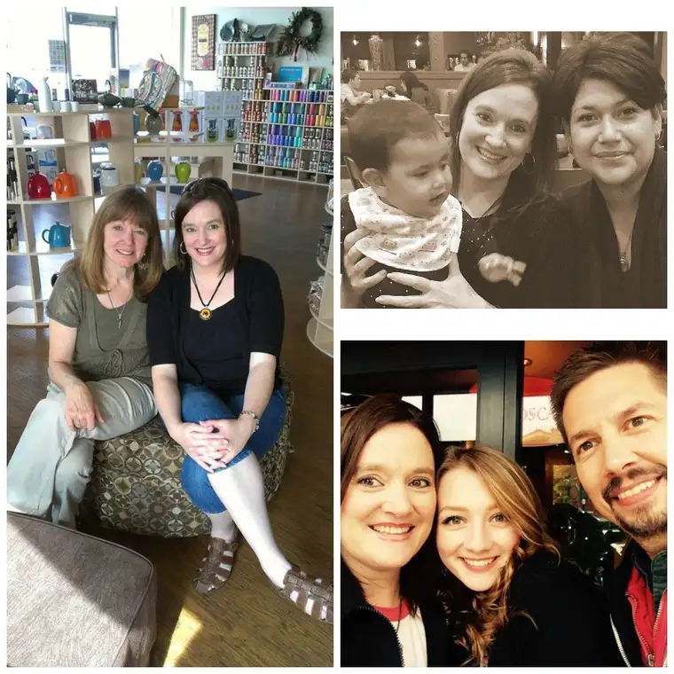

“I have loved you, says the Lord.” (Mal 1:2)
God provides. I have been thinking of this a lot lately, and understanding it in a new way.
Often, when we think of the Lord providing, we think most of all of our daily bread. And I have found this to be true; that even in the leanest financial times, we have been cared for. I know there are some who are not so blessed, and it is a human tragedy that this should be so, when the earth holds all that we need to survive.
Today, I’m not focusing so much on that, but an expanse of this idea of God’s provisions. For lately, I have felt it much, in the form of people in my life.
Let me put this into context by saying sometimes God can only get my attention by allowing difficulty, and that is the case here. I know I’m not alone in having experienced alienation from some friends in recent times. The divided culture has lent itself to a pruning of sorts — of our own hearts, and of the crowds we have followed in some cases. We’re being tested, and asked to take a hard look at reality. We’re being asked to make some decisions that we probably don’t want to make. And there are some decisions we don’t have to make because others are making them for us.
Regarding the latter, it can be a jolt when people in your life that you’ve loved or even just enjoyed more cordially cut away, whether softly or boldly. It’s happened to me a few times lately and I’m never quite prepared.
Thankfully, the disappointment doesn’t usually linger long. People matter much to me, but I understand that it’s most often not personal. I also see God at work in a big way, quietly moving behind the scenes of our clanging culture, seeking the lost, the lonely, and calling on his people more than ever to take up their positions in the vineyard. I don’t want to interfere with his work by getting caught up in my own fleeting disappointment. This only takes energy from where it deserves to be.
God knows all of this, and wants to help us increase our output for him, and I’ve found him coming through with backup whenever these hard changes come. Seeing it, too, God sends in provisions — others who fill in the gaps and remind us that not only is he still with us but he’s strengthening us in our losses and will use them for the good, if we let him.
Recently, as I’ve watched some in my life fade out, I’ve been simultaneously blessed with a plethora of encounters with other beautiful souls who’ve enriched my life. My respect for those who continue to see my heart grows each day, and in turn, makes me want to more and more see theirs.

Just a few examples:
Cindy, who reached out to me a couple months ago online, and because she dared to risk, has become a real-life friend. Through her, I’ve been witness to God’s gentle mercy as she shares her ongoing story of rediscovering the Lord after some time wandering about without him near.
Ann, a true soul sister who prays with me most weeks, and meets for soup before or after, warming my soul as the soup warms our bodies.
Ramona, my long-distance go-to girl for spiritual solace. What a treasure she is with her generous and listening heart!
Lori, my weekly walking pal, who gives me a safe place to bring my burdens, and allows me to be a receptacle for hers in turn.
Connie, a reader of my column who has encouraged me often and now, has reached out to meet in real life.
Olivia, my college daughter who checks in daily, and often with a sweet compassion in dry days, even as I am offering the same to her.
Vicky, who in her suffering, is never far away from my heart.
Madonna, who has never failed to find an encouraging and affirming word at just the right time.
The Sisters of Carmel, who harbor me, providing a refuge for longer writing projects, and sweet soul satiation.
Mom, whose rock-like love sustains and is ever-available.
And, oh boy, I am realizing that this list could go on for a very long time. There are so many dear people in my life who God keeps near me. Some are new friends. Others, I’ve known a very long time. When I really stop to count these “living provisions,” I am in awe. The losses, while never easy, seem so tiny compared to the gains.
“With age-old love I have loved you; so I have kept my mercy toward you.” (Jer 31:3)
It is so plain to me, God’s love for me. He sees my heart most of all, in every misstep and misunderstanding, and in all of the triumphs, too. With this reality firm, it is easy to move beyond the bumps. God is so good.
“Created, chosen, redeemed by almighty God, we have reason to sing praise at the beginning of this new day, not for any achievements of our own but for his great love for us.” (Magnificat, Feb. 8, 2017)
Could there be anything better? Anything at all?
Q4U: How has God provided for you in recent days?